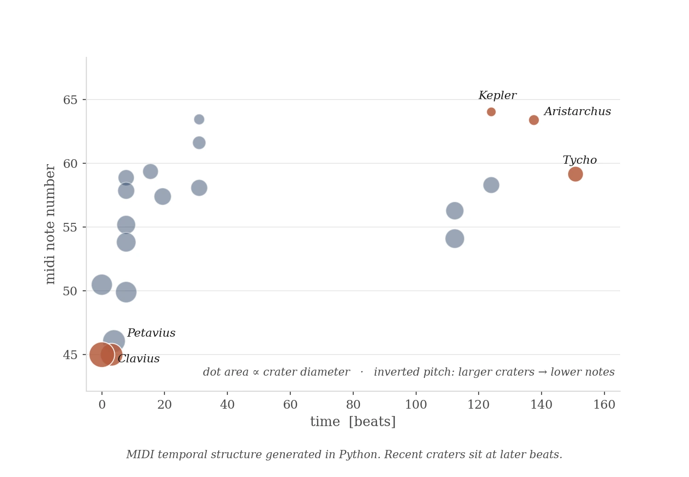

Why this case matters
- Shipped code-first. Python → MIDI → Logic Pro → JS / Web Audio. The interactive demo below is the output, not a mock.
- AI-in-the-loop, honestly documented. Caught a perceptual bug the code couldn't see. The ear flagged the contradiction.
- Perception-aligned mapping. Grounded in crossmodal research (Spence, 2011), not arbitrary parameter choices.
Click the moon to start
open fullscreen ↗Question
Can sonification reveal patterns visual representation misses?
Mapping
Inspired by Matt Russo. Crater properties map to audible ones so size and pitch reinforce each other rather than fight.
Dataset: 9 craters of ~9,000 catalogued, picked for parameter diversity (diameter 32–101 km, depth 1.0–4.7 km, age 108–3800 Ma) and geographical spread.
Pipeline
Each stage independently testable. Notebook, data, MIDI on GitHub →

MIDI temporal structure, generated in Python.
AI + human
I caught a critical error in AI-generated pitch values: tones weren't inversely correlated with visible crater size. Aristarchus (40 km) sounded higher than Kepler (32 km). The code reviewed itself fine; the ear caught the contradiction. Required systematic recalculation:
pitch = 330 − ((diameter − 32) / (101 − 32)) × 220
AI handles structure and arithmetic. Human perception catches relationship inconsistencies. Effective collaboration means iterating against perceptual goals, not only functional ones.
Audio
Logic Pro composition: Orchestral Organ, Studio Grand, Time Delay Synth. Layered to address temporal compression — animation plays at 3–5 s between impacts; geological reality is millions of years.
Applications
The pattern transfers to other NASA datasets (exoplanets, Mars seismic) and to climate, particle physics, biological signals. Sonification provides access for visually impaired audiences; synced visuals support hearing differences.
Reflection
What works: larger craters sounding lower and longer aligns with how the brain already links size and pitch (Spence, 2011). The data becomes easier to hold when the mapping runs with perception, not against it.
Limit I couldn't resolve: geological time. Compressing millions of years into seconds produces a coherent animation but no felt sense of duration. Separate research question.
Tools
Appendix · Extended dataset
Earlier exploration with 20 craters across the full range (diameter 32–225 km, age 108–4000 Ma).
Click to start/stop · Buttons toggle data labels